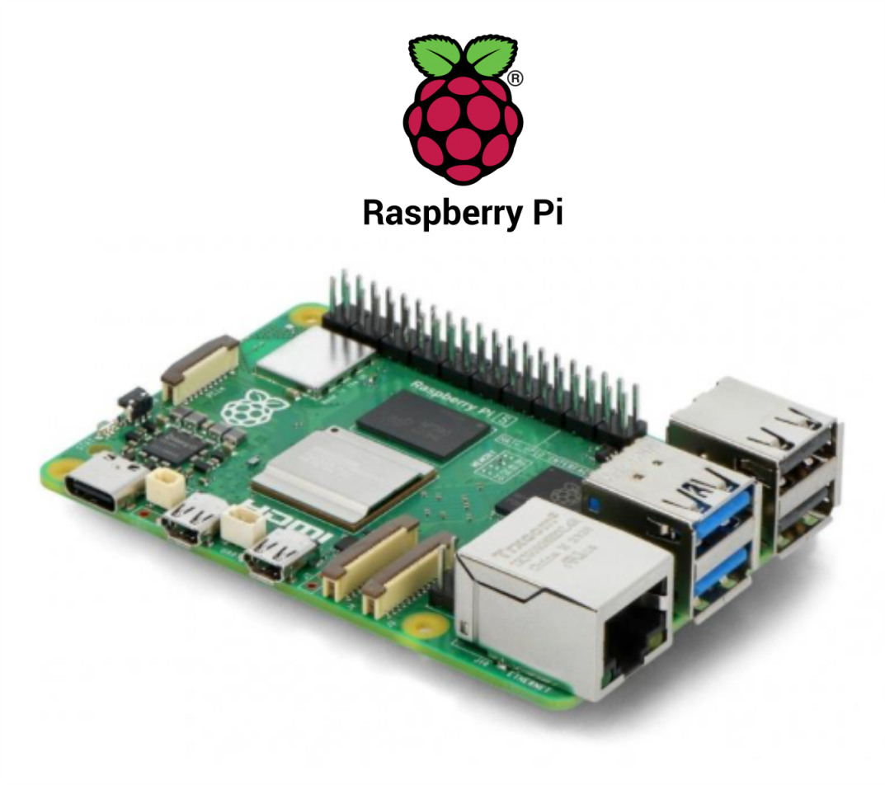
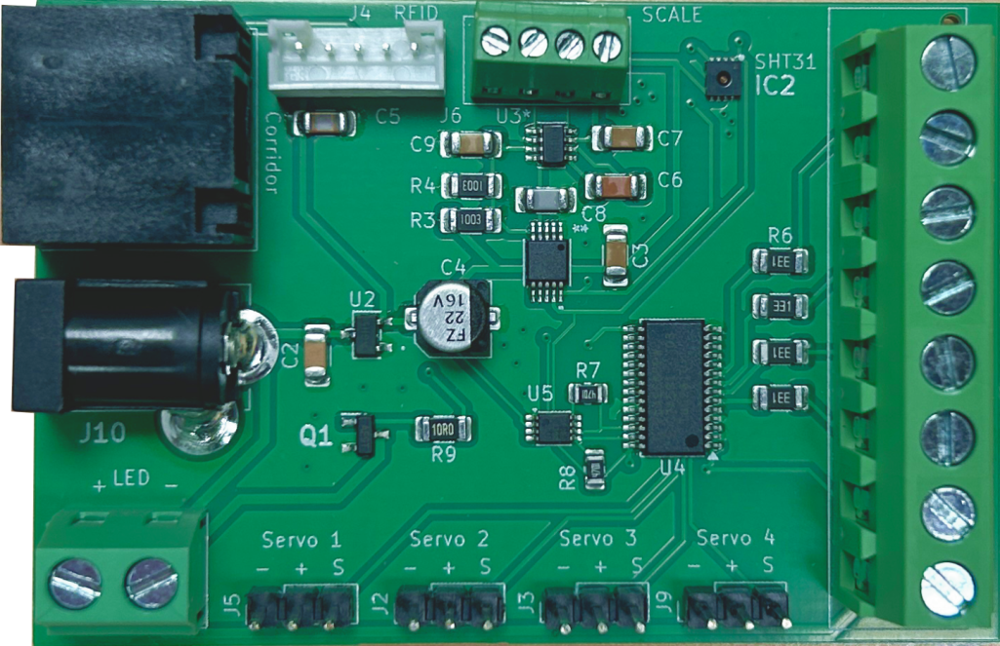
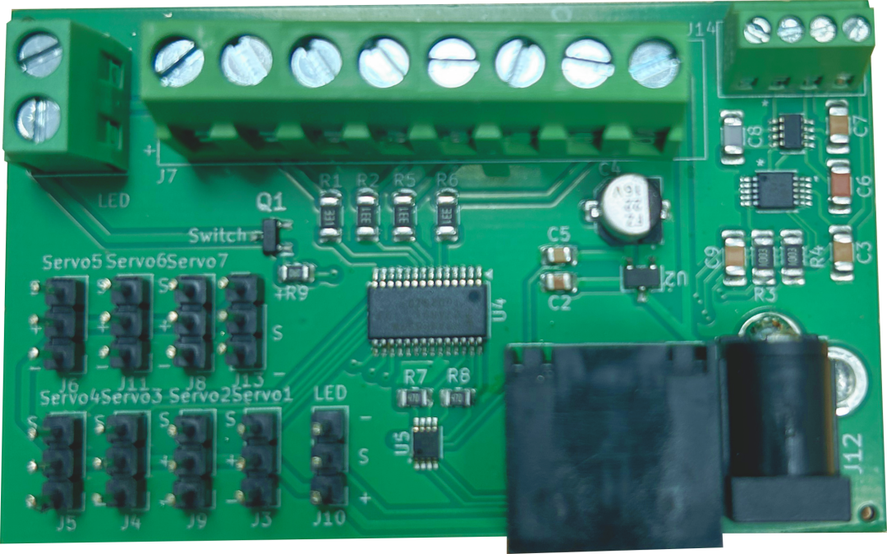
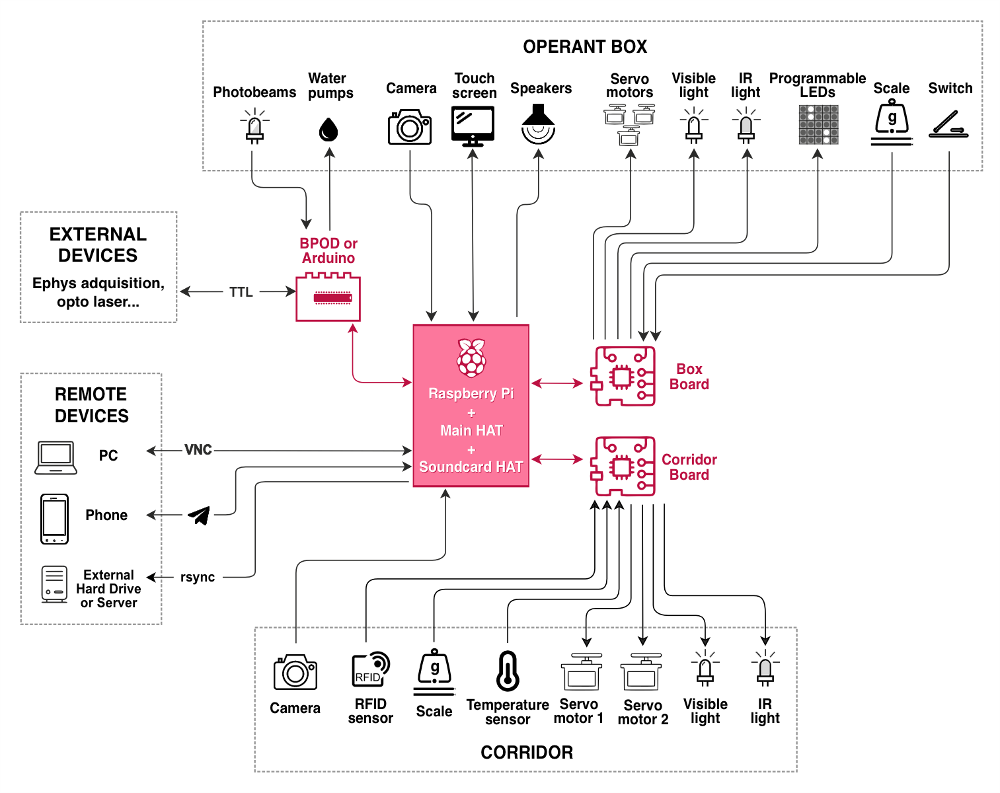
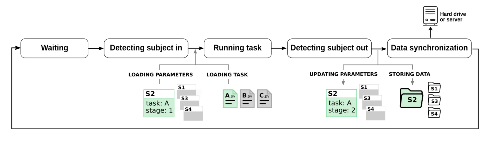

Detailed System Description
The Training Village (TV) system is built upon a lightweight aluminum framework and an acrylic base, which securely supports the animal home cages and a connecting corridor that leads into an operant box.

|
The entire ecosystem is centralized around a Raspberry Pi 5 running Python code. The Raspberry directly manages the following primary peripherals:
|
 |
The system features universal operant box compatibility. While it natively communicates with Bpod and Arduino, it can be easily adapted to alternative behavioral controllers (such as Harp or PyControl) simply by modifying the communication protocols.
Thanks to high-speed communication between the Raspberry Pi and the behavioral controller (if used), experimental workloads are efficiently split between the two devices:
The Raspberry Pi handles heavy computational and multimedia tasks, such as real-time position monitoring via video-tracking, triggering localized sound or video playback based on events or animal coordinates, managing LED matrices, or driving servo motors.
The Behavioral Controller (Bpod/Arduino) can be used for time-critical or high-precision events, such as photogate detection, delivering water rewards at a behavioral port, or sending rapid TTL signals to external hardware like optogenetic lasers.
A custom main HAT is mounted onto the Raspberry Pi 5 to handle power and data distribution. It receives a 5V power supply and utilizes two Ethernet ports to safely bridge both power and data to two specialized satellite boards.
Satellite Board 1: The Corridor Board
Controls the following peripherals installed in the corridor:
|
 |
Satellite Board 2: The Box Board
Features optional connectors for the user to utilize as needed:
|
 |

Software & Experimental Workflow
The Training Village framework operates entirely on Python and is managed exclusively via remote access from an external laptop or PC connected to the Raspberry Pi.
To run and manage experiments, the user creates a centralized project folder containing two essential Python components:
Task Scripts: User-defined scripts that govern the behavioral tasks, handle communication with the underlying controller (Bpod, Arduino, etc.), and log data in the standardized format required by the TV ecosystem.
Training Protocol Script: A master automation script that dictates the animal’s learning progression. It evaluates performance metrics after sessions, updates task variables, and automatically transitions the subject to advanced training stages once pre-set benchmarks are met.
Below is a summary of the standard operational cycle:
